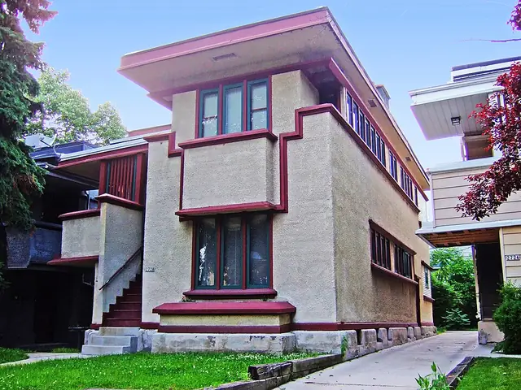
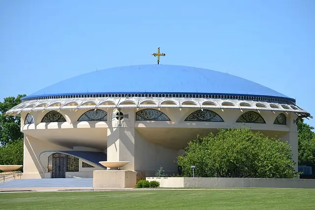
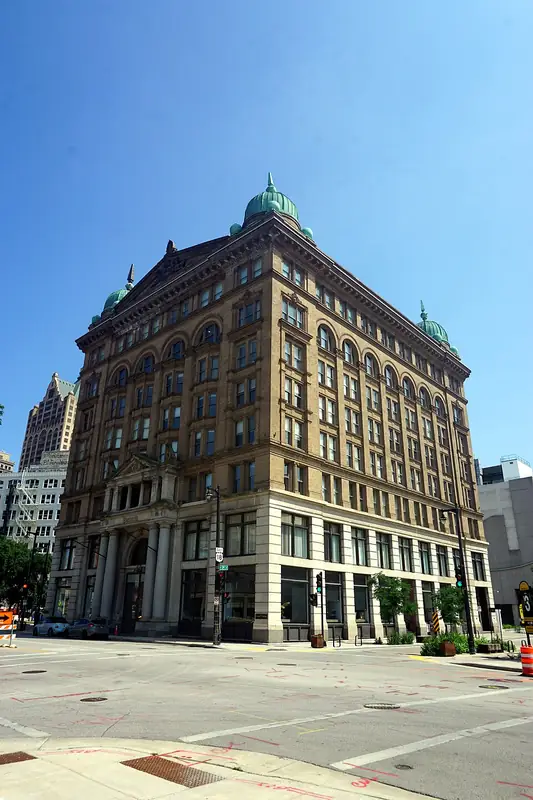

Brew City
Milwaukee architecture
Milwaukee was once home to four of the world's largest breweries, Schlitz, Blatz, Pabst and Miller, and for many years it brewed more beer than any other city, which earned it the nickname Brew City. Each summer its lakefront also hosts Summerfest, an 11-day festival counted among the largest music festivals in the world.
- 15Landmarks
- 1420Oldest · St. Joan of Arc Chapel
- 169 mTallest · Northwestern Mutual Tower and Commons
- 15Architects
Map and Look Around
Tap a numbered pin to see that landmark from the street with Apple Look Around.
Eat and stay near
Restaurants
Hotels
From Apple Maps. Walking times are estimates from straight-line distance.
Before you go
- Fly intoMilwaukee Mitchell International Airport (MKE)
Milwaukee Mitchell International lies about 9 km south of downtown and covers 2,314 acres with five runways. It began in 1920 as Hamilton Airport and is named after General Billy Mitchell, who grew up in Milwaukee and is often called the father of the US Air Force.
- CurrencyUS Dollar ($)
- LanguageEnglish
English is spoken with a friendly Midwestern accent. German heritage runs deep here: by 1900 about a third of residents had German roots, and Milwaukee became known as the most German of American cities.
- Getting aroundThe Hop streetcar
The Hop streetcar began service on November 2, 2018, linking the Milwaukee Intermodal Station with downtown, the Lower East Side and the Historic Third Ward along its 2.1-mile M-Line. A short Lakefront L-Line followed in 2024, and rides are still free.
- Where to stayFind hotels in Milwaukee on Expedia Compare on Booking.com Vacation rentals on Vrbo
Stamped! may earn a commission when you book through these links.
- Tours and ticketsFind tours in Milwaukee on GetYourGuide More tours on Viator
Skip-the-line tickets and guided tours of the landmarks. Stamped! may earn a commission.
15 landmarks in Milwaukee
-
Photo: Jules Verne Times Two, CC BY-SA 4.0, via Wikimedia Commons Milwaukee Art Museum
700 N Art Museum Dr, Milwaukee, WI
Santiago Calatrava's Quadracci Pavilion, his first building in the United States, opened on October 13, 2001 as the lakefront entrance to the Milwaukee Art Museum. Above its glass-roofed Windhover Hall sits the Burke Brise Soleil, a movable sunscreen of 72 steel fins with a wingspan of about 66 meters that opens and folds like a pair of wings in roughly three and a half minutes. A cable-stayed footbridge links it to downtown, and the museum's collection of nearly 35,000 works is the largest in Wisconsin.
- Built
- 2001
- Architect
- Santiago Calatrava (Quadracci Pavilion); Eero Saarinen; David Kahler
- Style
- Postmodern
- Height
- 27 m (90 ft)
- Today
- Museum
-
Photo: Michael Barera, CC BY-SA 4.0, via Wikimedia Commons Milwaukee County War Memorial Center
N Lincoln Memorial Dr, Milwaukee, WI
Finnish-American architect Eero Saarinen designed this lakefront memorial, begun in 1955 and dedicated on Veterans Day 1957 to everyone who has served in the US armed forces. Its giant mosaic mural by Edmund Lewandowski, installed in 1959, uses more than one million pieces of glass and marble to spell out the years of the Second World War and the Korean War in Roman numerals. The building also gave the Milwaukee Art Museum its start, as the city's two art collections were combined inside it in 1957.
- Built
- 1957
- Architect
- Eero Saarinen
- Style
- Modernism
- Today
- War memorial and museum
-
Photo: Sailko, CC BY 3.0, via Wikimedia Commons Pabst Mansion
2000 W Wisconsin Ave, Milwaukee, WI
Captain Frederick Pabst, a former Lake Michigan steamship captain who led his father-in-law's brewery to become the largest in America, moved into this Flemish Renaissance Revival mansion in 1892. Architect George Bowman Ferry gave the three-story house pressed brick walls, carved stone and terra cotta ornament and curving gables. After the family left in 1908 it was home to the Archdiocese of Milwaukee for 67 years, and in 1978 it was saved from being torn down for a parking structure. Today it is a house museum with daily tours.
- Built
- 1892
- Architect
- George Bowman Ferry
- Style
- Flemish Renaissance Revival
- Stories
- 3
- Today
- Museum
-

Photo: James Steakley, CC BY-SA 3.0, via Wikimedia Commons American System-Built Homes
2714 W Burnham St, Milwaukee, WI
In the 2700 block of West Burnham Street stand six modest homes that Frank Lloyd Wright designed as affordable housing. Developer Arthur Richards built them in 1915-16 to demonstrate Wright's American System-Built Homes, whose parts were cut and numbered at Richards' lumber yard and then assembled on site. The four duplexes and two bungalows form the only group of Wright homes that mixes both types. Listed on the National Register in 1985, most now belong to a nonprofit that restored the B1 bungalow in 2010.
- Built
- 1916
- Architect
- Frank Lloyd Wright
- Style
- Prairie School
- Today
- Residences
-
Photo: Gillfoto, CC BY-SA 4.0, via Wikimedia Commons Milwaukee City Hall
200 E Wells St, Milwaukee, WI
Henry C. Koch designed Milwaukee City Hall in a Flemish Renaissance Revival style that echoes the city's German roots. When it was finished in 1895 it was briefly the tallest habitable building in the world, and it stayed Milwaukee's tallest until 1973. It stands on 2,584 white pine piles driven into marshy riverside ground, and its tower holds a 22,500-pound bell named for the city's first mayor, Solomon Juneau. Inside, an eight-story atrium rises to a skylight.
- Built
- 1895
- Architect
- Henry C. Koch
- Style
- Flemish Renaissance Revival
- Height
- 108 m (353 ft)
- Stories
- 15
- Today
- City hall
-

Photo: Stephen Matthew Milligan, CC BY-SA 3.0, via Wikimedia Commons Annunciation Greek Orthodox Church
9400 W Congress St, Wauwatosa, WI
Frank Lloyd Wright designed this church for Milwaukee's Greek Orthodox community in 1956, and it was completed in 1961, after his death, making it one of his last works. Asked by Wright for the faith's main symbols, his wife, who was raised Greek Orthodox, answered 'the cross and the dome'. Wright built the design around both: a Greek-cross floor plan beneath a shallow, scalloped dome that sits on an inverted bowl. Much of the building uses gold-anodized aluminum, then a brand-new material.
- Built
- 1961
- Architect
- Frank Lloyd Wright
- Style
- Modern (Byzantine-inspired)
- Today
- Church
-
Photo: Paul Sableman, CC BY 2.0, via Wikimedia Commons Basilica of St. Josaphat
601 W Lincoln Ave, Milwaukee, WI
Milwaukee's Polish immigrants built this church in the Polish cathedral style, modeled on St. Peter's Basilica in Rome, and dedicated it in 1901. Architect Erhard Brielmaier reworked his brick design in stone after the pastor bought the salvage of Chicago's demolished US Custom House and Post Office, which arrived on 500 railroad flatcars. When it opened it seated 2,400 and was the largest church in the city. In 1929 Pope Pius XI made it the third minor basilica in the United States.
- Built
- 1901
- Architect
- Erhard Brielmaier
- Style
- Polish cathedral style
- Today
- Basilica
-
Photo: Sulfur (Talk / contribs), CC BY-SA 3.0, via Wikimedia Commons Mitchell Park Domes
524 S Layton Blvd, Milwaukee, WI
Three giant glass domes rise above Mitchell Park on the city's south side, each with its own climate. Built from 1959 to replace an 1898 conservatory, they opened in stages: the Floral Show Dome in 1964, the Tropical Dome in 1966 and the Desert Dome in 1967. The Tropical Dome holds nearly 1,000 plant species around a towering kapok tree, while the Desert Dome gathers cacti and succulents from the Americas, Africa and Madagascar. After years of repairs, renovation plans were approved in 2024.
- Built
- 1964
- Today
- Conservatory
-
Photo: Michael Barera, CC BY-SA 4.0, via Wikimedia Commons Allen-Bradley Clock Tower
1201 S 2nd St, Milwaukee, WI
Dedicated on October 31, 1962 on the Allen-Bradley company's new office wing, this tower by architect Fitzhugh Scott once held the Guinness record for the largest four-faced clock in the world. Each octagonal face, shaped like the Allen-Bradley logo, is about 12.3 meters across, and each minute hand is 20 feet long. Its glowing faces have long guided Lake Michigan sailors, and locals call it the 'Polish Moon' after the south-side neighborhood settled by Polish immigrants. Chimes were never added, so Big Ben could keep its chiming title.
- Built
- 1962
- Architect
- Fitzhugh Scott
- Style
- International Style
- Height
- 85 m (280 ft)
- Today
- Office building
-
Photo: Michael Barera, CC BY-SA 4.0, via Wikimedia Commons Pfister Hotel
424 E Wisconsin Ave, Milwaukee, WI
Guido Pfister and his son Charles opened this grand hotel in 1893 at a cost of more than $1 million. Architect Henry C. Koch designed it in the Romanesque Revival style, with rock-faced Wauwatosa limestone on the lower floors, cream brick above and then-rare features such as fireproofing, electricity and thermostats. Ben Marcus bought it in 1962 and added a 23-story tower behind the original building. It holds the world's largest hotel collection of Victorian art, and some visiting baseball players insist it is haunted.
- Built
- 1893
- Architect
- Henry C. Koch
- Style
- Romanesque Revival
- Height
- 76 m (250 ft)
- Stories
- 23
- Today
- Hotel
-

Photo: Michael Barera, CC BY-SA 4.0, via Wikimedia Commons Germania Building
135 W Wells St, Milwaukee, WI
Publisher George Brumder built this eight-story headquarters in 1896, and at the time it was the largest office building in Milwaukee. German-born architects Schnetzky & Liebert crowned it with copper domes shaped like spiked pickelhaube helmets, and a three-ton bronze statue of Germania once stood above the door. Anti-German feeling during World War I led to its renaming as the Brumder Building, and the statue was quietly removed one night and never traced. The original name returned after a 1981 renovation.
- Built
- 1896
- Architect
- Schnetzky & Liebert
- Style
- Beaux-Arts
- Stories
- 8
- Today
- Office building
-
Photo: Michael Barera, CC BY-SA 4.0, via Wikimedia Commons Iron Block Building
205 E Wisconsin Ave, Milwaukee, WI
Built in 1860 for grain dealer and banker James Baynard Martin, the Iron Block is the only building left in Milwaukee wrapped in a cast-iron skin. George H. Johnson designed it with Daniel D. Badger's Architectural Iron Works, and its panels were cast in New York and shipped to Milwaukee by boat. The Italianate front has round-arched windows on paired columns, with iron grooved to look like stone blocks. It was first called the Excelsior Block after the Masonic lodge on its top floor, and was restored in 1984.
- Built
- 1860
- Architect
- George H. Johnson
- Style
- Italianate
- Stories
- 5
- Today
- Commercial building
-
Photo: Michael Barera, CC BY-SA 4.0, via Wikimedia Commons Northwestern Mutual Tower and Commons
805 E Mason St, Milwaukee, WI
Designed by Pickard Chilton for insurer Northwestern Mutual, this 32-story tower opened on August 21, 2017, after the company's former 16-story building was demolished to make room for it. At 554 feet (about 169 meters) it is the second-tallest building in Milwaukee, and it cost an estimated $450 million. Ground was broken in August 2014, and the tower holds 1.1 million square feet of floor space. The company followed it with a 34-story residential tower, 7Seventy7, completed in 2018.
- Built
- 2017
- Architect
- Pickard Chilton
- Style
- Contemporary
- Height
- 169 m (554 ft)
- Stories
- 32
- Today
- Office building
-
Photo: Michael Barera, CC BY-SA 4.0, via Wikimedia Commons Villa Terrace
2220 N Terrace Ave, Milwaukee, WI
After a trip to Italy, A.O. Smith Corporation president Lloyd R. Smith and his wife Agnes asked architect David Adler for a home modeled on the 16th-century Villa Cicogna Mozzoni in Lombardy, completed in 1924. Smith called it Sopra Mare, 'above the sea', for its bluff over Lake Michigan. White-painted brick walls surround a central courtyard, and a water stairway runs down through terraced gardens first laid out by Rose Standish Nichols. Agnes gave the house to Milwaukee County in 1966, and it is now a decorative arts museum.
- Built
- 1924
- Architect
- David Adler; Rose Standish Nichols (gardens)
- Style
- Italian Renaissance
- Today
- Museum
-
Photo: Leroy Skalstad, CC0, via Wikimedia Commons St. Joan of Arc Chapel
1421 W Wisconsin Ave, Milwaukee, WI
This small stone chapel was built around the 15th century in Chasse-sur-Rhône, south of Lyon, which makes it the oldest church building in Milwaukee. Abandoned after the French Revolution, it was shipped to a Long Island estate in 1927 and rebuilt by John Russell Pope, then moved again to Marquette University and rededicated on May 26, 1966. Legend says Joan of Arc prayed here in 1429 and kissed a stone now set behind the altar, which is said to feel colder than the stones around it.
- Built
- 1420
- Architect
- Unknown (original); John Russell Pope; Lucien David and Earnest Bonnamy (reconstructions)
- Style
- Gothic
- Today
- Chapel
,_Art_Museum,_Milwaukee,_Wisconsin,_US_julesvernex2.jpg){kind=link}
.jpg){kind=link}


.jpg){kind=link}
.jpg){kind=link}
.jpg){kind=link}
.jpg){kind=link}
.jpg){kind=link}
.jpg){kind=link}

The app's quiz · 10 questions
How well do you know Milwaukee?
The same quiz as in Stamped!: name the landmark, its architect, its style or the year it was finished. Every round is different.
Know Milwaukee well?
Locals know their city best. Suggest a landmark we're missing, a fix to one we have, or share your own photo of one. Every suggestion is checked before it goes into the app.
More cities in North America
- Asheville
- Atlanta
- Austin
- Baltimore
- Boston
- Buffalo
- Charleston
- Chicago
- Cleveland
- Columbus, Indiana
- Cupertino
- Dallas
- Denver
- Detroit
- Fort Worth
- Guadalajara
- Havana
- Honolulu
- Houston
- Kansas City
- Las Vegas
- Los Angeles
- Mexico City
- Miami
- Minnesota
- Montreal
- Nashville
- New Orleans
- New York
- Oak Park
- Orlando
- Palm Springs
- Philadelphia
- Phoenix
- Pittsburgh
- Portland
- Quebec City
- San Diego
- San Francisco
- Savannah
- Seattle
- St. Louis
- Toronto
- Tulsa
- Vancouver
- Victoria
- Washington D.C.
Stamp all 15 in Stamped!
Fly through Milwaukee in photoreal 3D, take its 10-question quiz, plan your days and earn a passport stamp at every landmark. Free on iPhone, iPad, Mac and Apple Vision Pro.
Download on theApp StoreEnjoying the guides? Leave a tip to help keep new cities coming.